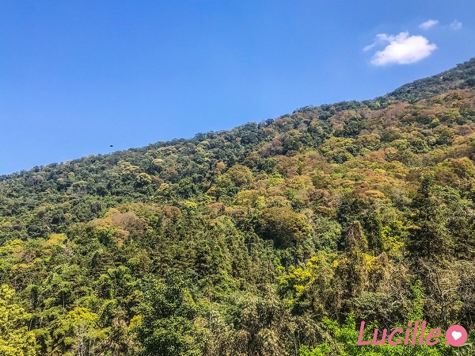

爬山那些事

comments powered by Disqus
苗栗，馬那邦山
目錄
時間：2022年3月12日
天氣：🌞
難度：🌕🌕🌑🌑🌑
（個人感受，僅供參考）
馬那邦山路線與交通方式
馬那邦山是位於大湖鄉、卓蘭鎮和泰安鄉交界的小百岳。海拔1406公尺，是台灣著名的賞楓地區。
大致上馬那邦山的登山路線有以下幾種：
🚗開車前往
- 珠湖登山口
👉最熱門路線，來回約2-3小時
- 上湖登山口
👉從此登山口可以導航至錦雲山莊停車場，但路會有點窄，可能不太好開。或是可以選擇導航至馬那邦山第一停車場，但走至登山口需要更長一段距離，天氣熱的話走道登山口就累了XD
- 天然湖登山口
👉從此登山口可以導航至馬那邦山第二停車場
⛰️這次我們選擇的是從馬那邦山第一停車場開始，並繞一圈回到原點
🚌搭乘大眾運輸工具前往
- 搭乘5656公車，到鄉公所站下車，再轉乘5661號，在中興站下車
(再步行約50分鐘後抵達珠湖登山口)
- 由苗栗搭乘往大湖、卓蘭、獅潭的班車至大湖，轉搭5663號至淋漓坪站下
(但走到第一登山口停車場約需半小時)
路線參考：
⛰️建議還是開車前往方便很多
—⛰️⛰️⛰️—
GPX地圖下載參考：
馬那邦山o型 https://hiking.biji.co/index.php?q=trail&act=gpx_detail&id=818936
回到目錄
路程時間與行程介紹
接下來，來介紹我們的路程：
抵達時間都是大概取整數時間
8.40-1.10
- 8:40 從馬那邦山地一停車場出發
路上遇見的櫻花🌸
- 9:40 抵達登山口起登
分享一些沿路的風景~
- 11:00 到達三角點
—⛰️⛰️⛰️稍作停留，吃個東西⛰️⛰️⛰️—
- 11:30 開始下山
再次分享一些沿路的風景~
- 12:20 抵達登山口，開始走回停車場

- 13:15 回到馬那邦山第一停車場
出發去吃草莓🍓XD
回到目錄
結語
若有時間考量，或是體力上比較不行的人，可以考慮從珠湖登山口起登
如果跟我們一樣，從第一登山口開始走，要走一大段路才能到登山口
馬那邦山雖然為小百岳，但走起來算蠻輕鬆的，推薦大家可以來這邊賞楓或一般郊遊都很適合
回到目錄
資料來源：四方通行旅遊